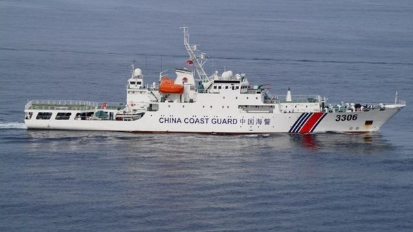
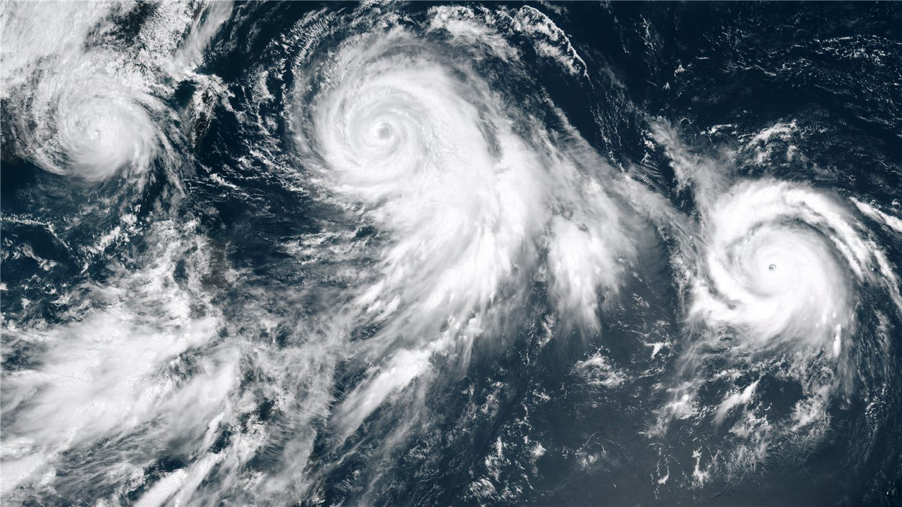
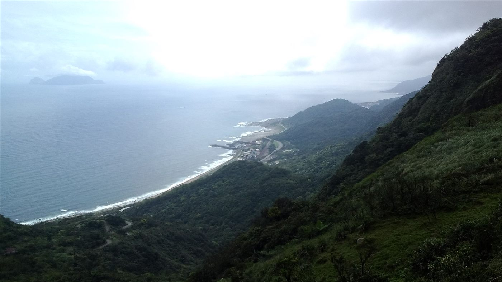
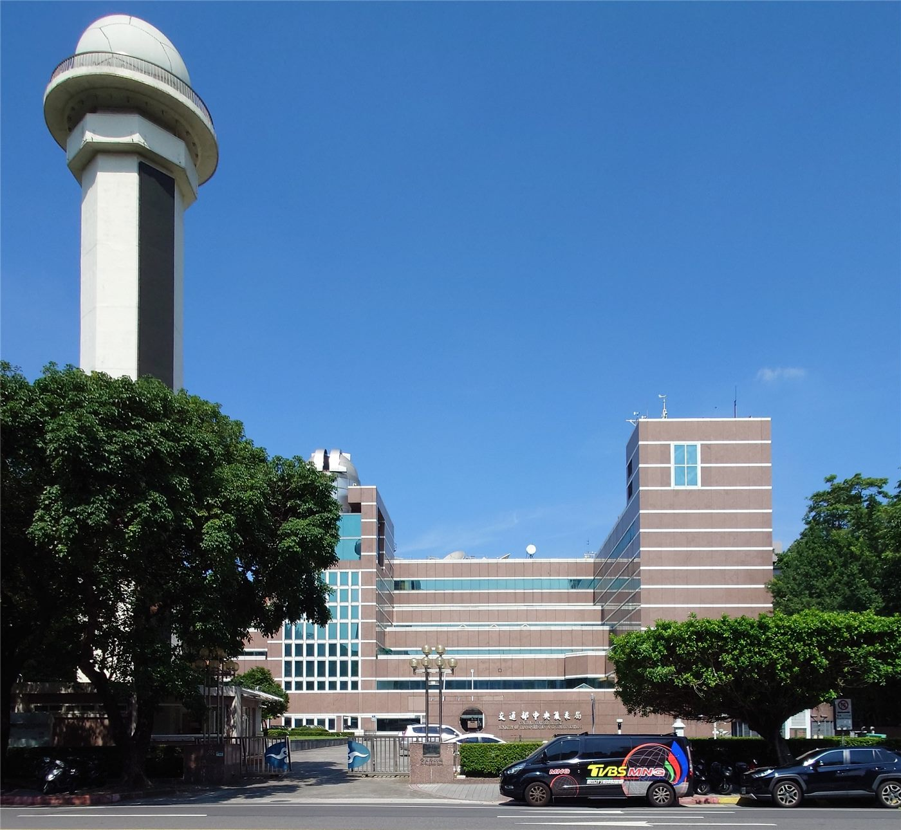
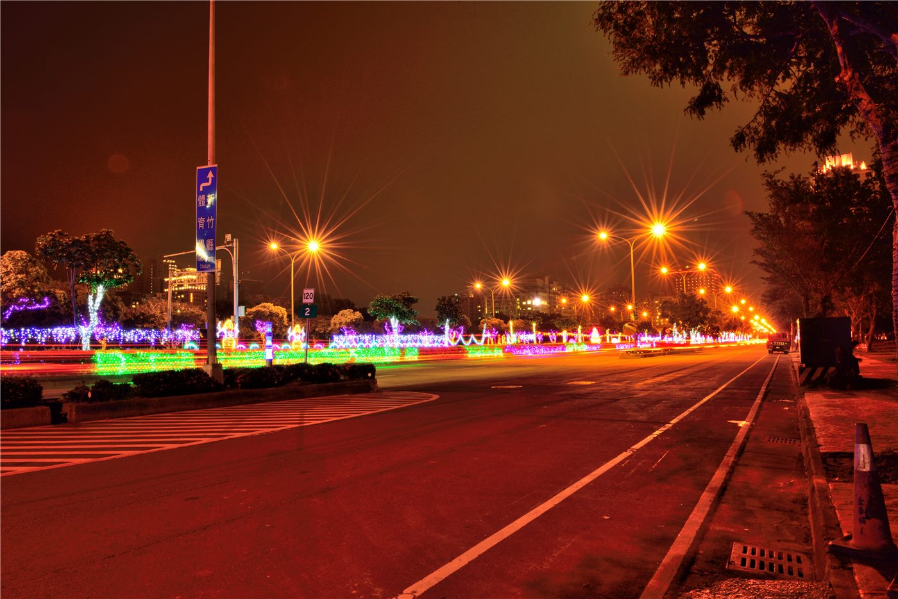
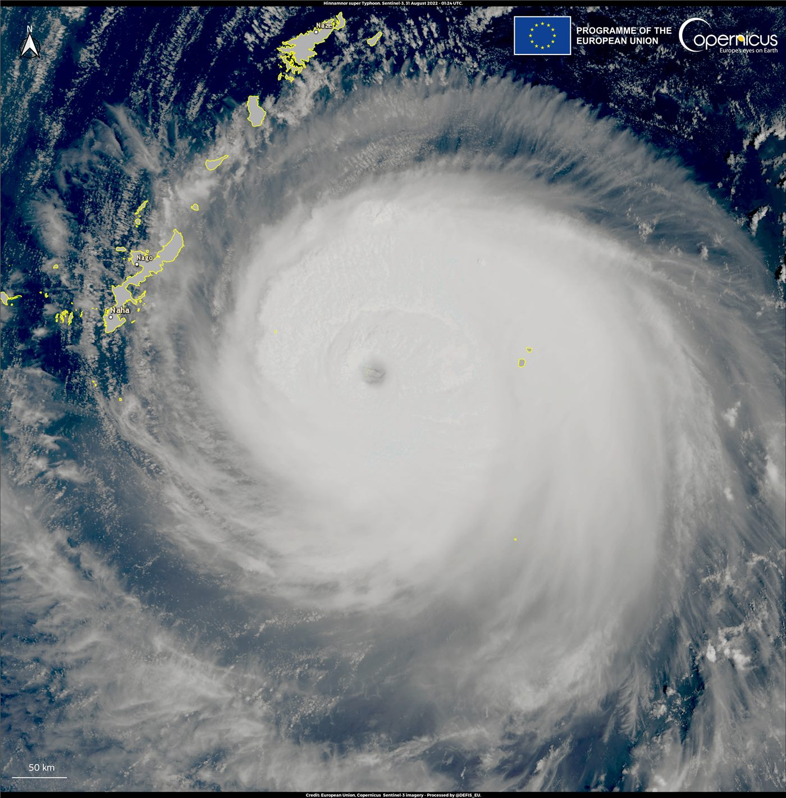
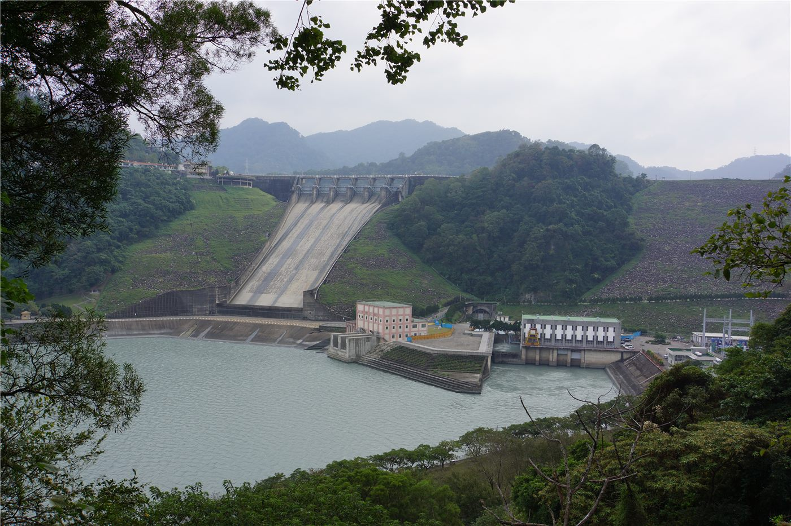

橋대만
대만라이칭더 대만 총통 취임 2주년… '인재·민생' 국정 행보
취임 2년을 맞은 라이칭더 총통이 평화·안정과 민생을 국정 기조로 제시했다. 대만은 인재 유치 제도를 본격 시행 중이다.
취임 2년을 맞은 라이칭더 총통이 평화·안정과 민생을 국정 기조로 제시했다. 대만은 인재 유치 제도를 본격 시행 중이다.

해외 화인 청년의 취업·정착 문이 넓어졌다. 졸업생은 허가 없이 2년 근무, 전문인력은 1년 거주 후 영주 신청.

TSMC 주가가 장중 2,585대만달러로 사상 최고가를 새로 썼다. 대형 매수세가 지수를 끌어올리며 대만 가권지수는 4만8,000(48K) 고지를 겨냥했다. 반도체 대장주의 질주가 시장 전반의 기대를 자극하고 있다.

라이칭더 대만 총통이 군 사관생도들에게 외부 세력의 영향과 회유를 경계하라고 당부했다. 군의 기강과 정체성을 강조하는 취지의 발언이다.
타이베이 지하철(MRT)이 신용카드와 아이폰 비접촉 결제를 도입한다. 교통카드 없이도 카드·스마트폰을 갖다 대면 개찰구를 통과할 수 있다.
대만 입법원이 가상자산을 규율하는 법안을 통과시켰다. 거래소 등록·이용자 보호·자금세탁 방지 등 기본 틀을 담았다.
대만 사법당국이 반도체 관련 밀수 의혹 사건으로 기술 기업 임원들을 구속했다. 첨단 기술·장비의 불법 유출 여부가 수사의 초점이다.

대만 대형 전자상거래 업체 PChome이 해킹 피해를 입었다. 이용자 정보 보호와 2차 피해 차단이 시급한 과제로 떠올랐다.

대만 부품 대기업 국거(國巨) 주식에서 3,880만 대만달러 규모의 거액 위약 결제(결제 불이행)가 발생했다. 시장은 배경과 파장을 주시하고 있다.

미국 내 여론조사에서 다수의 응답자가 ‘대만이 미국 안보에 중요하다’고 답했다. 대만 안보에 대한 미국 사회의 인식을 보여 주는 지표로 읽힌다.

대만 타오위안시가 상습 침수 구간인 라오제강(老街溪) 일대의 홍수 위험을 줄이기 위해 14억2,000만 대만달러를 투입한다. 배수·제방 등 방홍 시설을 전면 개선한다.

대만 기상당국이 올해 말까지 최대 5개의 태풍 또는 폭풍이 영향을 줄 수 있다고 전망했다. 본격적인 태풍철을 앞두고 대비를 당부했다.

대만 신베이시의 새 도시철도 노선인 三鶯線(싼잉선)이 운행을 시작했다. 수도권 서남부와 도심을 잇는 이 노선의 개통으로 통근 시간 단축과 지역 개발에 대한 기대가 커지고 있다.

대만 금융감독관리위원회 펑진룽 주임위원이 7월 1일 국태투신 사건과 관련해 회사의 지배구조와 내부통제가 실질적으로 작동하지 않았다고 공식 확인했다. 대만 자산운용업계 전반의 신뢰 문제로 번지고 있다.

미국재대만협회(AIT)는 대만이 미국 건국 250주년(2026년 7월 4일)을 기념하는 '자유250' 글로벌 점등 행사에 함께 참여한다고 밝혔다. 주요 랜드마크가 기념 조명으로 밝혀진다.

직장 내 괴롭힘을 규율하는 대만의 새 법제가 7월 1일부터 시행됐다. 상사의 갑질과 동료 간 따돌림 등을 포괄해 고용주에게 예방·조사 의무를 지운 것이 핵심이다.

대만 위생복리부 식약서는 중롄유지(中聯油脂)가 자체 검사에서 대두 샐러드유 1,300톤의 벤조피렌 수치가 기준을 초과한 사실을 자진 신고했다고 밝혔다. 1급 발암물질 검출로 회수 조치가 진행 중이다.

타이베이시의 노변주차 요금 납부 방식이 7월 1일부터 바뀌었다. 고지·납부 절차가 새 제도로 전환되면서 시 당국이 차주들에게 변경 내용 확인을 당부했다.

제 태풍 '파위(巴威)'가 2일 오전 8시 발생했다. 엘니뇨 해의 전형적 대형 강한 태풍으로 발달할 수 있으며, 다음 주 대만 동쪽 해상으로 접근할 것으로 전망된다.
글로벌 여권 지수의 최신 순위가 발표돼 무비자 방문 가능국 수를 기준으로 한 각국 여권의 '파워'가 공개됐다. 대만 여권의 순위도 함께 공표됐다.

대만 국방부는 최근 24시간 동안 중국 군용기 11대와 군함 5척, 공무선 5척이 대만 주변에서 활동했다고 발표했다. 대만군은 경계·감시 태세를 유지하고 있다고 밝혔다.

대만에서 하루 사이 네 차례 지진이 잇따랐다고 聯合報가 전했다. 최대 규모는 5.3으로, 진앙지인 이란(宜蘭) 지역의 최대 진도는 2로 관측됐다. 큰 피해는 보고되지 않았다.

대만 행정원이 군인 급여 4% 인상안을 승인했다고 自由時報 계열 타이베이타임스가 전했다. 모병 환경 개선과 사기 진작 차원이다.

대만 타이난(台南)에서 재배한 과일의 첫 미국 수출 물량이 현지에 도착했다고 自由時報 계열 타이베이타임스가 전했다.

제 태풍 ‘바위(巴威)’가 뚜렷한 눈을 형성하며 빠르게 세력을 키우고 있다. 대만 기상 전문가들은 이르면 3일 밤 강태풍으로 승격하고 폭풍 반경이 큰 ‘대형 태풍’으로 자랄 것으로 내다봤다. 대만 상륙 여부는 4~5일쯤 윤곽이 드러날 전망이다.

대만 中聯유지의 ‘문제 샐러드유’ 파문이 커지고 있다. 장완안(蔣萬安) 타이베이시장은 해당 기름이 시내 22개 학교에 유입된 사실을 확인하고, 주요 상권에서도 예방 차원의 전면 철수를 진행 중이라고 밝혔다.

대만 자취안(加權)지수가 3일 장중 한때 900포인트 가까이 급락하며 46,000선을 밑돌았다. TSMC가 10일 이동평균선을 하회했고, 신타이완달러 환율도 32 관문에 다가섰다.

대만 육군의 방공 훈련 ‘선궁(神弓)·선잉(神鷹)’이 다음 주 실시된다. 이번 훈련에서는 휴대용 스팅어 지대공 미사일의 첫 실사격이 이뤄질 예정이다.

대만 국립지난(暨南)대학과 법무부 조사국이 해커 공격에 대비한 국가급 사이버 보안 연합방어 체계를 가동했다. 학계와 수사기관이 위협 정보를 실시간 공유하는 협력 모델이다.

대만을 뒤흔든 발암물질 검출 식용유 파문이 커지고 있다. 타이중시의 2차 조사 결과 문제의 기름이 전국 300개 업체로 흘러간 것으로 드러났고, 대형 식품사 웨이취안(味全)과 국방부, 노래방 체인 하오러디(好樂迪)까지 납품처에 포함됐다.

대만 육군이 다음 주 미사일 실사격 훈련을 실시한다고 소식통을 인용해 타이베이타임스가 보도했다. 정례 전력 점검의 일환이다.

구글이 일부 반도체 주문을 인텔로 돌린다는 관측이 나오면서, 전직 TSMC 엔지니어가 대만 ‘실리콘 실드(반도체 방패)’의 위기를 경고했다고 聯合報가 전했다.

태풍 바비가 강태풍급으로 발달했다. 대만에 얼마나 영향을 줄지는 진로가 북쪽으로 꺾이는 시점과 각도에 달려 있다고 대만 기상 전문가들이 분석했다.

레이먼드 그린(谷立言) 미국재대만협회(AIT) 타이베이사무처장이 중남미의 새 지도자들에게 대만 수교국 방문을 권장하는 발언을 내놨다고 聯合報가 보도했다. 대만 외교 공간을 둘러싼 미국의 미묘한 신호로 읽힌다.
차이잉원 전 대만 총통이 미국 독립기념일 기념 행사가 열린 타이베이 톈무야구장에 모습을 드러냈다고 聯合報가 보도했다. 입고 나온 야구 유니폼의 등번호가 ‘해석 불가의 숫자’라며 온라인에서 화제가 됐다.
타이중 첩운(도시철도) 블루라인의 1천억 대만달러 규모 재원 부족분이 총예산서에 드러나지 않는다는 지적이 시의회에서 제기됐다고 自由時報가 보도했다. ‘뜨거운 감자를 숨겨 놓았다’는 질타도 나왔다.

대만 입법원의 드론 관련 법안들이 위원회 심사 단계로 넘어갔다고 타이베이타임스가 보도했다. 무인기 산업 육성과 방어 체계 구축을 함께 담는 제도화 작업이다.

대만 국가안전국(NSB)이 마약 대응 활동을 강화한다고 타이베이타임스가 보도했다. 국제 조직을 통한 신종 마약 유입을 안보 차원에서 차단하겠다는 것이다.

가오슝시가 보행자를 위해 설치한 대형 파라솔이 뙤약볕과 소나기를 함께 막아 주며 호평을 얻고 있다고 自由時報가 보도했다. 첩운국은 “24시간 펼쳐 두고 강풍 때만 접는다”고 밝혔다.

가수 왕리훙(王力宏)이 중국 대륙 콘서트 도중 무대에서 정면으로 넘어져 얼굴과 귀를 다쳤고, 심야에 병원으로 옮겨져 39바늘을 꿰맸다고 自由時報와 聯合報가 전했다.

대만 중앙기상서(CWA)가 태풍 바비(Bavi)의 영향으로 다음주 비가 이어질 수 있다고 내다봤다고 自由時報가 전했다. 먀오리·타이중·난터우 3개 현시에는 밤사이 호우·폭우 경보가 내려졌다.
대만 정부 부처가 자체 AI 인증 제도의 이점을 알리고 나섰다고 自由時報 계열 타이베이타임스가 전했다. 기업의 AI 도입 신뢰도를 높이는 것이 목표다.

대만 대학입시에서 분발입학(分發入學)이 반영하는 과목 조합이 140종에 이르러, 분과측험(分科測驗) 응시생들의 ‘정밀한 과목 선택’이 요구된다고 聯合報가 전했다.

대만을 뒤흔든 ‘문제 식용유’ 파문과 관련해 장완안(蔣萬安) 타이베이시장이 시 차원의 5대 조치를 발표하고 중앙정부에 4개 항의 대응을 촉구했다고 自由時報가 5일 보도했다.

대만 신베이시가 첩운(도시철도) 싼잉선(三鶯線) 개통을 축하하는 행사에서 드론 600대의 야간 공연을 선보여 눈길을 끌었다고 聯合報가 5일 보도했다.

대만 민중당 황궈창(黃國昌) 주석과 국민당 원로 자오사오캉(趙少康)이 우이쉬안(吳怡萱) 후보의 선거총부 개소식에 나란히 참석해 야권 공조를 과시했다고 聯合報가 5일 보도했다.

대만 양밍자오퉁(陽明交通)대학 전 전문직원이 인장을 위조해 자금을 빼내려다 미수에 그치고, 퇴직하면서 교수·학생 자료를 대량 삭제한 혐의로 유죄 판결을 받았다고 聯合報가 5일 보도했다.

대만 먀오리현의 명산 자리산(加里山) 등산로에서 최소 82곳의 스프레이 낙서가 발견돼 산악인들의 공분을 사고 있다고 聯合報가 5일 단독 보도했다.

대만의 18세 우완 투수 허화(何樺)가 미국프로야구 필라델피아 필리스와 계약했다고 聯合報가 5일 보도했다. 올해 고교 졸업생 중 세 번째 미국행이다.

발암 우려 물질이 검출된 식용유 파문이 대만 전역으로 번지고 있다. 문제의 기름이 타이베이·신베이·타이중 3개 도시 131개 학교 급식에 사용된 것으로 확인됐고, 식품의약서는 첫 번째 문제 제품 명단을 공개하기로 했다.

태풍 바비가 세력을 빠르게 키우며 올해 '풍왕' 자리를 넘보고 있다. 수요일 위력이 절정에 이르고 금요일 대만에 가장 가까워질 전망이어서 해상 경보 발령이 예상된다.

대만에서 외국인 배우자와의 결혼이 전체의 18.5%에 달하는 것으로 나타났다. 다섯 쌍 중 한 쌍에 가까운 비율로, 대만 사회의 다문화 전환을 보여주는 지표다.

대만 증시가 시중 자금을 빨아들이면서 단기 자금시장이 빡빡해지자, 대만 중앙은행이 1조 대만달러가 넘는 유동성을 공급하기로 했다. 주식 열기와 자금 수급의 불균형을 조정하려는 조치다.
우핀루이(吳品叡)가 국민당·민중당 진영의 지지 속에 자이(嘉義)현장 선거 출마를 선언했다. 오는 11월 지방선거를 앞두고 야권 연대의 시험대가 될 지역으로 꼽힌다.
왕진핑(王金平) 전 입법원장이 가오슝에서 국민당 커즈언(柯志恩) 후보 지원에 나섰다. 그는 가오슝의 현실을 “겉은 금빛으로 번쩍이지만 속은 녹슬었다”고 꼬집으며 정권 교체를 호소했다.

대만에서 학교폭력 신고가 늘고 있지만 이를 뒷받침할 상담·지도 교사 인력은 태부족이라고 聯合報가 보도했다. 예방과 사후 관리 모두 구멍이 뚫릴 수 있다는 우려가 나온다.

대만 형사국이 통일발표(統一發票·영수증 복권) 당첨을 사칭한 사기에 주의하라고 경고했다. 당첨금 지급을 미끼로 개인정보나 수수료를 뜯어내는 수법이다.

대만 식품의약서(食藥署)가 발암 우려 물질이 검출된 문제 기름을 쓴 첫 제품 명단을 공개하기로 했다. 유명 맛집까지 문제 기름을 쓴 것으로 드러나며 파문이 확산하고 있다.

6일 새벽 3시 11분쯤 대만 이란(宜蘭)현 외해에서 규모 4.9 지진이 발생했다. 최대 진도는 2로, 큰 피해 신고는 없는 것으로 파악됐다.

대만 에버그린(長榮)해운의 해운·항공 분리 과정에서 오너 일가가 미공개 정보로 주식을 사들여 거액의 차익을 봤다는 의혹이 불거졌다. 장궈화 회장은 1억2천만 대만달러라는 기록적 보석금을 냈고, 장궈정 씨는 1천만 대만달러 보석에 출국금지 조치를 받았다.

대만 금융지주사 직원 연봉 순위가 공개됐다. 第一金이 기층 직원 평균 147만 대만달러로 처음 1위에 올랐고, 5개 지주사의 기층 연봉이 모두 140만 대만달러를 넘었다.

24절기 중 샤오수를 맞아 대만 전역이 본격 무더위에 들어섰다. 폭염 속 건강 관리와 전력 수요 관리에 비상이 걸렸다.

중국 해군의 잠수함발사 전략미사일(SLBM) 시험발사에 대해 대만 총통부가 ‘국제사회를 위협하려는 의도’라며 엄정 규탄 입장을 냈다고 聯合報가 전했다. 중국 측은 전략 억지력이 지역 안정에 기여한다는 입장이어서, 양안이 상반된 해석을 내놓고 있다.

대만을 뒤흔든 ‘문제 식용유’ 파문과 관련해 줘룽타이(卓榮泰) 행정원장이 관계 부처를 두 번째로 소집해 ‘어떤 타협의 여지도 없다’고 밝혔다고 聯合報가 전했다. 식품 당국은 논란이 된 ‘핵심 21일’의 처리 시간표를 공개하며 지연 통보에는 반드시 과태료를 물리겠다고 했다.

수교국 과테말라의 대표단이 대만을 방문해 양국 관계를 재확인했다고 자유시보(자유시보 영문판 타이베이타임스)가 전했다.

대만 노트북 위탁생산 대기업 콴타(廣達) 주식이 배당락을 하루 앞두고 하한가 부근에서 대량 거래됐다고 聯合報가 전했다. 외국인과 투자신탁이 서로 반대 방향으로 움직이는 이례적 공방이 벌어졌다.

슈퍼태풍 ‘바비(巴威)’의 예상 경로가 1997년 대만에 큰 피해를 남긴 태풍 위니(溫妮)와 비슷하다는 분석이 나와 대만이 촉각을 곤두세우고 있다고 聯合報가 전했다. 창화(彰化)현은 침수 취약 지역 주민에게 방수 차수판 3천 장을 무료 대여하기로 했다.

근무 중 매장의 75 대만달러짜리 오트라테를 마셨다가 기소된 소매점 직원이 고등법원에서 무죄를 선고받았다고 자유시보 영문판이 전했다.

폭우 때 물에 떠내려온 현금 8천 대만달러를 주워 경찰서에 신고한 남성이, 돈 주인인 이웃으로부터 ‘원래 1만 3천 위안이었는데 5천이 모자란다’며 유실물 횡령 혐의로 고소당했다고 聯合報가 전했다.

대학 신입생을 가르는 대만 분과측험(分科測驗)이 제도 도입 이래 처음으로 태풍 때문에 연기됐다. 招聯會(대학초생연합회)는 8일 오전 강태풍 '바비(巴威)' 북상에 따라 당초 11~12일 시험을 13~14일로 이틀 순연한다고 발표했다. 성적 발표와 지원 일정도 줄줄이 늦춰진다.

8일 이른 아침 대만철도(台鐵)의 티켓 발권·예약 시스템이 전면 마비됐다가 복구됐다. 조사 결과 전산 기계실의 냉수 냉각 주기(主機) 고장이 원인으로 확인됐다.

대만을 뒤흔든 식용유 발암물질 파문이 더 커졌다. 문제 업체 제품에서 기준치를 넘는 새로운 배치(批號)가 추가로 확인됐고, 스충량(石崇良) 위생복리부장은 8일 입법원 위생환경위원회에 출석해 사태를 보고하고 의원 질의에 답했다.
미국 학술지가 대만인의 미국·중국·일본에 대한 호감도 조사 결과를 공개했다. 일본에 대한 호감이 가장 높고 미국이 뒤를 잇는 흐름이 재확인됐지만, 전문가들은 수치 이면의 '숨은 우려'를 지적했다.

전날 천 점 가까이 빠졌던 대만 증시가 8일 급등 출발한 뒤 상승분을 반납하며 45,600선을 둘러싼 공방을 벌였다. TSMC와 미디어텍을 놓고 매수·매도 세력이 격돌했다.

세금 체납 등으로 압류된 명차들이 경매대에 오른다. 대만 법무부 행정집행서가 페라리·포르쉐 등이 포함된 '드림카 경매' 일정을 공개해 애호가들의 관심이 쏠리고 있다.

대만 고등법원이 검찰의 상소를 기각하면서 마잉주 전 총통의 '삼중안(三中案)' 재판이 8년 만에 무죄로 종결됐다. 국민당 당영(黨營) 자산 매각을 둘러싼 초대형 사법 공방이 끝나면서 대만 정치권에도 파장이 번지고 있다.

태풍 바비(巴威)의 폭풍 반경이 31년 만의 기록을 갈아치울 만큼 커졌다. 해상경보가 임박한 가운데 전국 농민들은 태풍과 경주하듯 수확을 서두르고 있고, 화롄에서는 심야 지진까지 겹쳤다.

대만의 청년 주택대출 우대 프로그램 '청안(青安) 3.0'이 8월부터 시행된다. 고소득·다주택자를 배제하는 조항과 결혼·육아 가구 추가 대출 우대가 새로 담겼지만, 학계에서는 실효성 논쟁이 이어진다.

8일 심야 대만 화롄현 슈린향에서 규모 4.3의 지진이 발생했다. 최대 진도 4가 관측됐으며, 큰 피해는 즉각 보고되지 않았다.

대만 국방부가 9월부터 군사학교의 위병(경계) 근무를 민간 보안업체에 맡기는 시범 사업을 시작한다. 병력 자원 감소 속에 전투 임무에 인력을 집중하려는 조치로 풀이된다.

대만을 뒤흔든 식용유(먹는 기름) 안전 파동이 정치 공방으로 번지고 있다. 라이칭더 총통이 특정 업체에 대한 수사를 직접 지목하자, 야당은 행정원이 초기 정보를 '덮었다(蓋牌)'며 줘룽타이 행정원장을 겨냥했다.
대만 최대 인구 도시 신베이시의 시장 선거전이 정책 대결로 막을 올렸다. 리쓰촨 후보는 AI·무인기 산업 정책을, 쑤차오후이 후보는 교통 개선 청사진을 각각 내걸었다.

대만 경제부가 국산 4족 보행 로봇(로봇개) 연구개발에 착수했다. 순찰·재난 대응·산업 점검 등 수요가 커지는 4족 로봇 시장에서 자체 기술 기반을 확보하겠다는 취지다.

대만 국방부가 군 복무자의 일부 수당과 복리후생을 인상하는 방안을 추진한다. 병력 확보 경쟁이 치열해지는 가운데 처우 개선으로 모병의 매력을 높이겠다는 취지다.

일제강점기 차(茶) 거상 장아신(姜阿新)이 지은 신주현의 서양식 저택이 '토지 용적 이전' 방식으로 보존 재원을 마련하는 길을 모색한다. 소유주가 개발권을 다른 부지로 옮겨 파는 대신 고적을 지키는 구조다.

강태풍 바위(巴威)가 대만에 접근하면서 10일 타이베이·신베이 등 10여 개 현·시가 태풍휴무(출근·등교 중지)에 들어갔다. 기상서는 이란·화롄을 첫 경계 지역으로 육상경보를 발령했고, 증시는 휴장한다. 백화점 휴업과 대중교통 조정도 잇따랐다.
대만 법원이 간첩 혐의로 기소된 민진당 전 당직자에게 징역 10년을 선고했다. 정당 내부 인사의 기밀 유출 사건에 중형이 내려지면서 대만 사회의 보안 경각심이 다시 높아졌다.

대만의 발암물질 혼입 식용유 파문이 확산되는 가운데, 당국이 문제 제품을 10일 정오까지 매대에서 내리라는 시한을 제시했다. 제품책임보험의 배상 여부가 불투명하다는 지적도 나왔고, 한 유명 업체는 선제 사과와 전액 환불로 대응했다.

태풍 바비로 대만 증시가 휴장한 사이 야간 선물이 800포인트 넘게 뛰자 투자자들 사이에 '거래일을 날렸다'는 탄식이 쏟아졌다. 태풍 휴무를 틈탄 '조기 출국 러시'로 도쿄행 항공권은 3만 대만달러를 돌파했다.

대만의 청년 주택담보대출 우대 제도 '신칭안(新靑安) 2.0'이 곧 시행된다. 자유시보는 구제도 보조를 끊김 없이 이어받으려는 수요자들이 챙겨야 할 5대 포인트를 짚으며, '무봉(無縫) 승계'에는 변수가 있다고 전했다.

대만 국가중산과학연구원(중과원)의 궈정산 박사가 중앙연구원 원사(院士)로 선출됐다. 자유시보는 그를 '윈펑 미사일과 치린 프로젝트의 핵심 추진자'로 소개했다. 국방 과학자가 최고 학술 영예를 안은 상징적 장면이다.

대만 지룽시의 보육시설 아동학대 사건에서 피해 아동이 20명에 이르는 것으로 파악됐다. 감독 책임을 물어 부처장이 비서로 강등되는 등 관련 공무원들이 무더기로 징계를 받았다.

국립타이완대병원 윈린분원이 장기요양 인력 양성을 위한 교학빌딩 건립에 나선다. 교육부는 재원 부족분을 전력 지원하겠다고 약속했다. 고령화 시대 돌봄 인력 양성이 대학병원의 새 과제로 떠올랐다.

중형 태풍 바위(巴威)가 11일 새벽 대만 본섬에 상륙할 것으로 예보됐다. 누적 강우량이 최대 900mm에 이를 것으로 관측돼 전국 20개 현·시가 출근·등교를 중단했고, 약 9천 명이 사전 대피했다. 태풍의 중심은 이미 기상 레이더 관측권에 진입했다.

대만을 뒤흔든 '발암 기름' 파동이 확대일로다. 검찰이 중롄(中聯) 총경리 위링충에 대해 구속영장을 청구했으나 법원은 2천만 대만달러 보석을 결정했다. 타이탕(台糖)은 예방적 회수로 단기 샐러드유 부족 가능성을 경고했다.

유럽의회가 대만을 지지하는 조치를 담은 결의를 채택했다. 미국 국무부는 주타이베이 미국협회(AIT) 처장에 대한 중국 측 비판을 반박하며 대만 관련 입장을 재확인했다.

대만 인구가 30개월 연속 줄었다. 출생아 수가 사망자 수를 밑도는 자연 감소가 굳어지며, 노동력과 병력, 학교 체계 전반에 걸친 구조적 과제가 커지고 있다.
중형 태풍 바비(巴威)가 11일 새벽 대만에 상륙할 것으로 예보되면서 전국이 대비 태세에 들어갔다. 예방 대피 인원이 9천 명에 육박하고, 20개 현·시와 2개 지역이 출근·등교 중지(태풍 휴무)를 발령했다고 聯合報와 自由時報가 전했다.

대만의 발암물질 식용유 파문이 유통·식품 가공 전반으로 번지고 있다. 국영 타이탕(台糖)은 예방적 회수 조치로 단기적인 샐러드유 공급 부족이 나타날 수 있다고 밝혔고, 편의점 주먹밥에도 문제 기름이 쓰인 사실이 확인돼 롄화식품이 자발적 환불에 나섰다고 聯合報가 전했다.
훙하이(폭스콘)그룹이 돌연 공시를 내고 류이루(劉憶如) 법인 대표 이사의 사임을 발표했다고 聯合報가 전했다. 세계 최대 전자제품 위탁생산 기업의 이사회 구성 변화에 시장의 관심이 쏠린다.

블룸버그 공동창업자가 ‘아름다운 섬’이라는 뜻의 옛 이름 ‘포모사(Formosa)’로는 오늘날 대만의 경제적 위상을 담아내기 어렵다며 새로운 별칭을 제안했다고 聯合報가 전했다. 반도체를 축으로 한 대만 경제의 세계적 위상을 보여주는 상징적 발언이다.

미국 정부가 미국재대만협회(AIT) 타이베이 사무처장을 겨냥한 중국 측 비판에 대해 반박했다고 자유시보 계열 타이베이타임스가 보도했다. 대만해협을 둘러싼 미·중 간 설전이 외교 인사 개인을 두고도 벌어지는 모양새다.

대만 수사당국의 ‘프린스그룹(Prince Group)’ 사건 수사가 세계 각국 금융정보분석기구(FIU) 연합체인 에그몬트 그룹의 상을 받았다고 자유시보 계열 타이베이타임스가 보도했다. 국경을 넘는 대규모 자금세탁 조직에 대한 수사 성과를 국제적으로 인정받은 것이다.

중형 태풍 바비가 대만을 관통하면서 113명이 다치고 23만 가구 이상이 정전을 겪었다. 타오위안·신주·먀오리 등 북서부 피해가 컸고, 산간 마을 55가구는 도로가 끊겨 고립됐다.
대만에서 돈을 빌려 주식을 사는 신용거래가 사상 최고 수준으로 불어났다. 데이트레이딩 실패로 결제 대금을 못 내는 위약 사례가 젊은 층에서 급증해 금융당국이 경계하고 있다.

대만 입법원이 무인기 관련 조례안을 오는 목요일 심사한다. 여러 법안이 함께 상정된 가운데 국민당과 민진당이 입법 주도권을 놓고 신경전을 벌이고 있다.

대만이 세계적으로 커지는 40억 달러 규모의 로봇개(사족보행 로봇) 시장 공략에 나섰다. 반도체·정밀기계 생태계를 앞세워 글로벌 경쟁에 가세한다는 구상이다.

대만을 강타한 태풍 바비가 12일 오전 해상 경보까지 모두 해제됐다. 강태풍 등급을 6일간 유지한 ‘역대급’ 태풍이었다. 그러나 남쪽 해상에서 새로운 열대 요란이 발달 중이어서 기상당국은 다시 긴장하고 있다.

올해 개통한 대만 최장급 사장교 담강대교가 태풍 바비 통과 후 안전 점검을 마치고 12일 오전 10시부터 통행을 재개했다. 신베이 서부 해안 교통이 정상을 되찾았다.

태풍 바비가 지나간 타이베이시가 밤사이 쓰레기 특별 수거에 나섰다. 4천 명이 넘는 환경미화 인력이 투입돼 폭풍이 남긴 가로수 잔해와 생활 쓰레기를 치웠다.

태풍 바비의 폭우로 신주현 젠스향의 이싱대교 방면 도로와 현도 120호 일부 구간의 노반이 유실됐다. 산간 부락 진입로가 끊기며 복구가 시급하다.
대만 국방부 발표 기준 12일 대만 주변에서 활동한 중국 군용기는 없었고 군함 1척만 관측됐다. 태풍 바비 직후의 이례적 소강 국면이다.

대만 인플루언서가 일본에서 출입금지 구역에 들어가 촬영한 사실이 알려지며 일본 네티즌들의 거센 비난을 받고 있다. 해외 촬영 콘텐츠의 윤리 문제가 다시 도마에 올랐다.

TSMC가 자이(嘉義)과학단지 2기 부지에 첨단 패키징 공장 3동을 추가 건설한다. 1기 2동은 지난달 양산에 들어갔다. 17일 실적설명회를 앞두고 외국계 증권사 목표주가는 최고 3,800台幣까지 치솟았다.

대만 대표단이 국제물리올림피아드에서 금메달을 따냈다고 自由時報 계열 타이베이타임스가 보도했다. 반도체 강국을 떠받치는 기초과학 교육의 저력을 보여줬다는 평가다.

올해 타이베이영화상에서 1950년대를 배경으로 한 '다멍(大濛)'이 최우수작품상을 포함해 5개 부문을 휩쓸며 최대 승자가 됐다. 류관팅(劉冠廷)이 남우주연상, 린이팅(林怡婷)이 여우주연상을 안았다.

테슬라 승용차가 도로 함몰 구덩이에 빠지며 대만 사회를 뒤흔든 '주베이 천갱(싱크홀) 사건'의 1심 선고가 13일 오후 신주지방법원에서 내려진다. 뇌물 혐의 등으로 기소된 양원커 신주현장 등 12명의 사법 책임이 갈린다.

필리핀 동쪽 해상의 열대저압부가 13일 오전 제11호 태풍 '하이선(海神)'으로 발달했다. 대만 기상당국은 북북서진하는 경로로 볼 때 대만에 직접 영향은 없을 것으로 내다봤다.

대만에서 퇴직 정점이 예상보다 5년 앞당겨졌다는 분석이 나왔다. 특히 교사들은 연금이 줄어드는 것을 감수하고서라도 조기 퇴직을 택하는 흐름이 뚜렷하다고 聯合報가 보도했다.

대만 정부의 청년 주택대출 우대 프로그램 '청안 3.0'이 결혼·육아 가구 추가 대출에 소득 상한(배부 조항)을 두기로 하면서, 온라인에서 '정작 누구를 돕는 정책이냐'는 논쟁이 벌어졌다고 聯合報가 보도했다.

대만을 할퀸 태풍 바비가 수자원에는 뜻밖의 선물을 남겼다. 집수구역 강우로 유입된 물의 총량이 스먼댐 자체 저수용량에 맞먹는 규모라고 자유시보가 보도했다.

대만 국민 메신저 LINE에서 '새 메시지 알림을 눌렀는데 열어 보면 내용이 없는' 현상이 잇따라 이용자들이 혼란을 겪고 있다. 운영사는 4가지 해결 방법을 안내했다고 聯合報가 보도했다.

100년 역사의 타이난 룽톈역에 대만 특급열차 푸유마호·쯔창호가 처음으로 정차하게 됐다고 聯合報가 보도했다. 작은 역의 '승격'을 두고 지역사회가 들썩이고 있다.